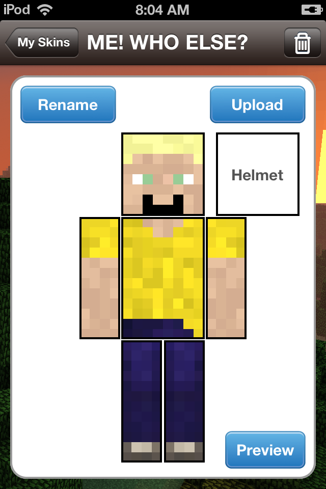

Finn Larson is an total newbie turned expert on the game of Minecraft. Born on October 6, 2000. In 4th Grade, a wonderful person by the name of Brian Trybrus Jr. told Finn about Minecraft. He showed him and Finn was pulled in instantly. He is also the leader of the MINETEAM! "Now I has learned all there is to know about Minecraft FACTS! No myths here. Don't ask me about "Herobrine" or "Junkboy". I know nothing about them. But anything else, just email me at finnlarson2911@gmail.com, and i'll answer your question on the Q&A page."
